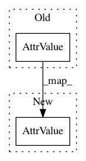

d55c6cb37984efa3bf861d9716aa1a1ce7cbd7a6,server/bert_serving/server/graph.py,,convert_variables_to_constants,#,142
Before Change
print("convert!")
print(type(dtype))
print(type(dtype.type))
fp16_type = attr_value_pb2.AttrValue(type=types_pb2.DT_HALF)
print(type(fp16_type))
print(type(fp16_type.type))
output_node.attr["dtype"].CopyFrom(dtype)
After Change
need_convert = True
output_node.attr["dtype"].CopyFrom(
attr_value_pb2.AttrValue(type=types_pb2.DT_HALF) if need_convert else dtype)
output_node.attr["value"].CopyFrom(
attr_value_pb2.AttrValue(
tensor=tensor_util.make_tensor_proto(
In pattern: SUPERPATTERN
Frequency: 3
Non-data size: 2
Instances
Project Name: hanxiao/bert-as-service
Commit Name: d55c6cb37984efa3bf861d9716aa1a1ce7cbd7a6
Time: 2019-01-17
Author: hanhxiao@tencent.com
File Name: server/bert_serving/server/graph.py
Class Name:
Method Name: convert_variables_to_constants
Project Name: hanxiao/bert-as-service
Commit Name: f22b843a42b1cd65e34ee7e70866145ceb98f15e
Time: 2019-01-17
Author: hanhxiao@tencent.com
File Name: server/bert_serving/server/graph.py
Class Name:
Method Name: convert_variables_to_constants
Project Name: hanxiao/bert-as-service
Commit Name: 4058e4efcc07421fb93e400ad24e72a459776217
Time: 2019-01-17
Author: hanhxiao@tencent.com
File Name: server/bert_serving/server/graph.py
Class Name:
Method Name: convert_variables_to_constants